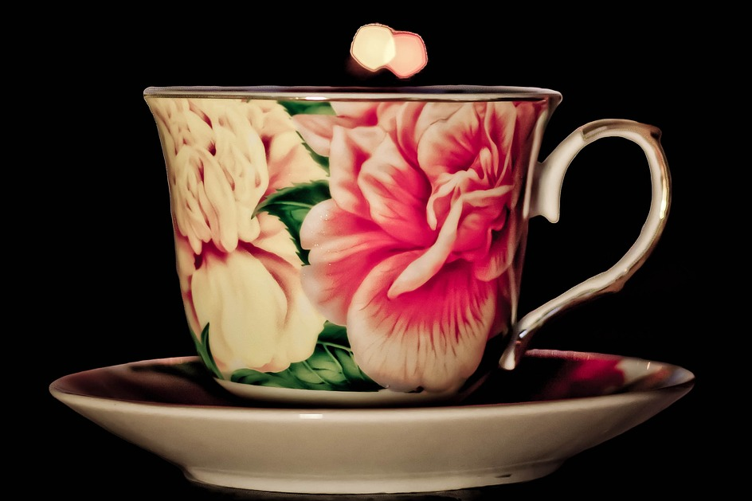
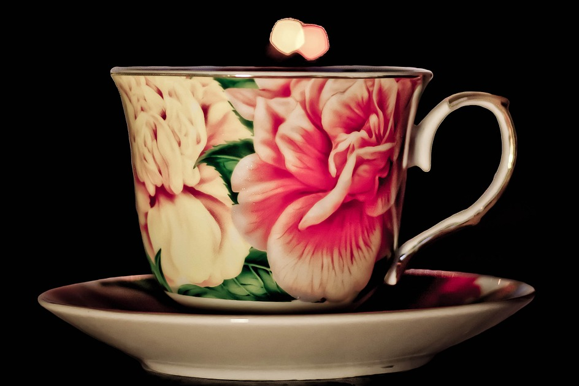
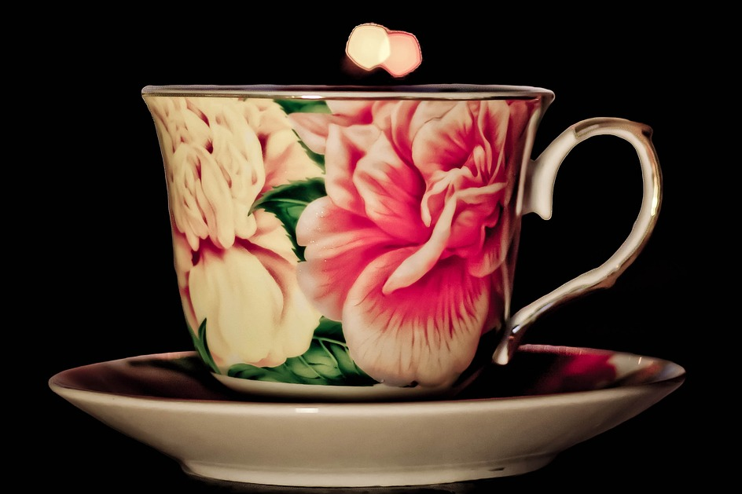

Upptäck vårt fantastiska sortiment av handgjorda muggar, skapade med omsorg och kärlek. Vare sig du letar efter en perfekt present eller vill förnya din egen muggkollektion, så har vi något för dig. Utforska våra unika designer och hitta din favoritmugg idag.

Våra vita muggar
Våra vita muggar är en perfekt blandning av enkelhet och elegans. Den rena, vita färgen ger en tidlös känsla som passar in i alla miljöer och stilar. Här är några anledningar till varför våra vita muggar är det perfekta valet:
Tidlös Skönhet: Den vita färgen går aldrig ur tiden. Den är lika vacker idag som den kommer vara om tio år.
Universell Kompatibilitet: Våra vita muggar är lätta att matcha med andra köksprodukter och inredningsstilar. De kompletterar perfekt ditt befintliga köksinredning.
Hög Kvalitet: Varje mugg är tillverkad med omsorgsfullt utvalda material av högsta kvalitet. Det betyder att din mugg kommer att hålla länge och ge dig många härliga stunder.
Mångsidig Användning: Använd din vita mugg för allt från din morgonkopp kaffe till en avkopplande kopp te på kvällen. Den passar lika bra på frukostbordet som på middagsbjudningen.
Våra vita muggar är inte bara vackra att titta på, de är även en funktionell och pålitlig följeslagare i vardagen. Utforska vårt sortiment och upptäck skönheten i enkla ting.
Våra svarta muggar
Våra svarta muggar är en modern och stilsäker uppdatering av den klassiska muggen. Den djupa, svarta färgen ger en sofistikerad touch till din dryckesupplevelse. Här är några anledningar till varför våra svarta muggar är det perfekta valet:
Modernt Eleganta: Den djupa svarta färgen ger en modern och elegant känsla som sticker ut och ger din dryck en extra touch av stil.
Mångsidig Design: Svarta muggar kan användas för att skapa en kontrast mot ljusa omgivningar eller som en matchande komplement till en mörkare inredning.
Hög Kvalitet: Våra svarta muggar är tillverkade av högkvalitativa material för att säkerställa att de håller länge och ger dig en fantastisk dryckesupplevelse varje gång.
Mångsidig Användning: Använd din svarta mugg för allt från din favoritkaffe till en rykande kopp choklad. Den är lika lämplig för avslappnade ögonblick som för speciella tillfällen.
Våra svarta muggar är inte bara praktiska och stilfulla, de är även en smakfull förlängning av din personliga stil. Utforska vårt sortiment och låt våra svarta muggar förgylla dina stunder.
Färgglada muggar
Våra färgglada muggar är sprudlande och lekfulla, perfekta för att addera glädje till din dryckesupplevelse. Varje mugg är en fest av färger som lyfter ditt sinne och gör varje stund speciell. Här är några anledningar till varför våra färgglada muggar är det perfekta valet:
Livfulla Färger: Varje mugg är noggrant utformad med en explosion av färger, vilket gör varje dryckesstund till en fest för ögat.
Uttryck Din Personlighet: Välj bland vårt breda sortiment av färgglada muggar för att hitta den som bäst speglar din egen unika stil och personlighet.
Hög Kvalitet: Vi kompromissar aldrig när det gäller kvalitet. Våra färgglada muggar är tillverkade av högkvalitativa material för att säkerställa lång hållbarhet och en strålande färgupplevelse.
Mångsidig Användning: Våra färgglada muggar är lika perfekta för en energigivande morgonkaffe som för en avslappnande kopp te på kvällen. De ger varje ögonblick extra glans.
Utforska vårt sortiment av färgglada muggar och låt dem bli en färgstark förlängning av ditt sinne för glädje och kreativitet. Låt färgerna lysa upp din dag!
Kundrecensioner:
"Fantastiska muggar! Otroligt vackra design och högkvalitativa material. Jag älskar min nya mugg och kommer definitivt att beställa fler!" - Anna S.
"Enastående kundservice! Fick snabb hjälp med mina frågor och muggen kom väl förpackad och i perfekt skick." - Johan K.
"Jag köpte en mugg som en present och mottagaren älskade den! Tack för att ni hjälpte mig att hitta den perfekta presenten." - Maria L.
"Jag har aldrig sett sådana unika muggar någon annanstans. Varje mugg känns som ett konstverk!" - David P.
"Snabb leverans och muggen överträffade mina förväntningar. Jag rekommenderar [Ditt Företagsnamn] till alla muggälskare!" - Emma H.
"Dessa muggar är nu mina favoriter. De är både vackra och användbara. Jag använder dem varje dag!" - Anders M.
 
